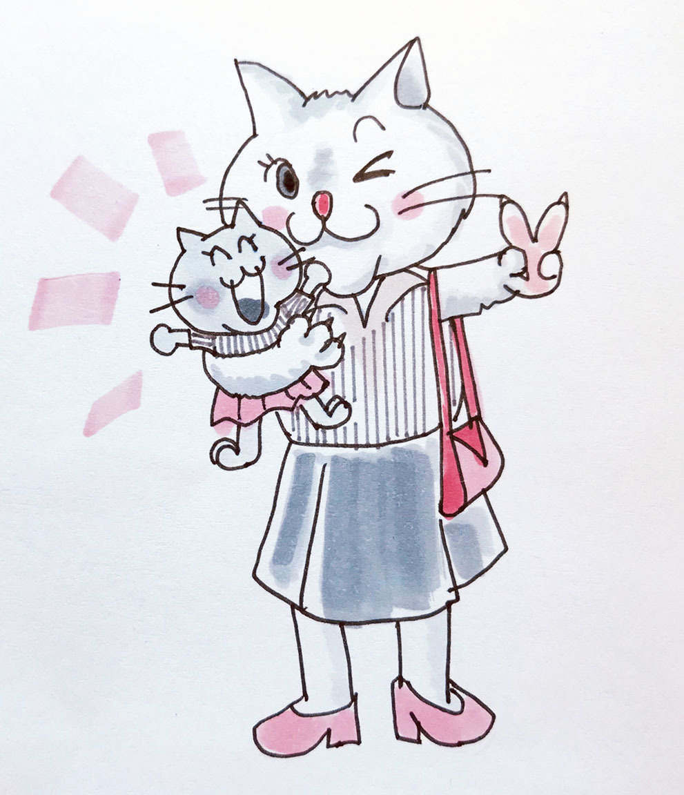

| 「イタくない」シンママのススメ。①恋愛・再婚・友情編 | |
| 上井 ヒマリ | |
| (2018) | |
目次
・「男親コンプレックス」が無い。または、過去にはあったが解消している
セックスに対して異常にガツガツしておらず、きちんと避妊してくれる。
はじめまして、札幌在住のバツイチシングルマザーで精神科職員の、上井ヒマリです。『イタくないシンママのすすめ。』を手に取っていただき、誠にありがとうございます。この小冊子の内容は、主に私・上井のシンママとしての実体験と、私のところにご相談に見えられた方々に掲載許可を得たエピソード、また、ＳＮＳ上での交流で得た情報、そして心理学・精神医学で得た知識や職場での経験などを基に書かれています。
この小冊子は三部構成になっています。本編「第１部 恋愛・友情編」の後に「第２部 お金・仕事編」「第３部 育児編」と続きます。本来は「第１部 お金・仕事編」「第２部 育児編」「第３部 恋愛・友情編」という流れを予定していたのですが、シンママの連れ子さんが虐待を受ける事件が続いたことを受け、出版の順を変更いたしました。このような拙い小冊子ですが、身勝手な親、不幸な再婚の犠牲になるお子さんが増えることのないよう、願いを込めて書かせていただきました。
連れ子さんと再婚相手の関係に不安がある方、
再婚に焦ってしまっている方、
わが子の幸せを守りたいと願うシンママさんに、読んでいただけたら幸いです。
恋愛編
１ シンママの恋愛観、十人十色。
二〇一六年に発表された厚生労働省の統計によると、その年の離婚件数は約二十一万七千件。近年の日本の離婚件数は、ゆるやかに上昇と下降を繰り返しているようですが、婚姻率の低下と相まって全体的な「結婚離れ」「少子化」が加速しているようで、寂しい限りですね。仲睦まじい夫婦を基礎とした家庭が増えることが、望ましいことには間違いないのですが。
同じく統計によると、シンママになった理由としてもっとも多いのが「離婚」、次に多いのが「未婚での出産」、最後に「死別」と続きます。
現在筆者は、とりわけ離婚率の高い（四十七都道府県中第三位！）北海道に住んでいますが、六年前に筆者が離婚した後にも、数人のママ友から離婚の報告があったり、離婚に向けての相談を受けたり、ＳＮＳのアカウントに表示されている苗字がいつの間にか変わっていたり。やはり離婚はとても身近な問題になっています。
結婚生活が最初からうまくいくのが一番の理想ですが、残念ながらそうならなかった場合も、シンママは試練を乗り越え、母子ともに幸せになっていかなくてはなりません。
仕事に育児に、女手一つで頑張っているシンママさんもいます。
いっぽうかつて同じシンママであった方でも、現在はとても素敵な伴侶にめぐり逢い、幸せなステップファミリーを築いている方もいます。
逆に、傍から見たら「どうして？？」と思われるような残念な男につかまって、なぜか別れることも出来ずに不毛な関係を続け、ついには連れ子さんへの暴力や虐待などさらなる問題を抱えるようになる方もいます。
親業に集中し、充実した「肝っ玉母さん」人生を送る人。
再婚や新たな恋愛で、母子共に幸せになる人。
母子ともに不幸になり、子どもを犠牲にしてしまう人。
現在のあなたには、どれか当てはまりそうなタイプはありますか？
世間はともすればシンママを一括りに見がちですが、じつは事情もタイプも千差万別。表面からは見えない歴然とした違いがあるのです。
２ もし、ステップ婚を望むなら

結論から述べますと、本当に幸せなステップ婚を叶えるためには、夫婦がお互いに精神的に自立していることが絶対条件です。よく耳にする言葉ではありますが、「精神的に自立している」というのは具体的にどういう状態を指すのでしょうか。
メンタルバランスよし！良縁に恵まれるシンママ
順調に再婚話に恵まれ、母子ともに前夫のときの何倍も幸せになれる方。このような方には、以下のような特徴があります。
・「男親コンプレックス」が無い。または、過去にはあったが解消している
父親との現在の関係や、父親に対するイメージが良好である。たとえ立派な父親でなかったり、たとえば片親であっても、その不完全さを含めて自分の中で消化し終わっている。加えて、元夫へのマイナス感情もすでに卒業している。極端な男嫌いや男好きではなく、異性にも自然な態度で接することが出来るのが特徴。
・再婚に対して全然焦っていない
自力で頑張って子どもを養育していくという覚悟もプランも出来ている。また、離婚の段階で自分名義の十分な預貯金 があるか、仕事上のキャリア や資格など、経済面で勝算 があるのが特徴。かといって近づきがたいバリキャリ風やフェミニストタイプではなく、職場などで男性を立てるのも上手い。
・良い意味でプライドを持っている
協調性はあるが、友達は選ぶタイプ。自分を安売りせず、卑屈にならない。
・自立する目標を立てている
児童扶養手当などの各種制度を利用する場合も、税金が財源であることをきちんと意識し、「一時的にお世話になろう」「申し訳ないな」という気持ちを持っている。まっとうな方法で生活レベルを維持・向上させ、しっかり納税していくという意識を持っている。
・基本的な「きちんと」が身についている
身なりがＴＰＯに合っていて、清潔感がある。離婚前から家の中がきちんと整頓されており、お金の管理もきちんとしている。

そのまま婚活して大丈夫？危険なシンママ
逆に、残念な男にひっかかってさらに不幸になっていくシンママさんには以下のような特徴があります。当てはまる方は耳が痛いかもしれませんが、自分に厳しくチェックしてみてください。本当に大丈夫？
・男親コンプレックスがある
父親との関係に問題を抱えたままになっている。または、ダメな父親に振り回された過去がある。自分のコンプレックスに気づいておらず、短絡的で、深く考える習慣がついていないことも特徴。
・男性になんとかしてもらおうという依存心が強い
シングルでいることに不安を感じ、離婚後すぐに婚活を始めたり、友人に紹介をせがんだりする。自分自身は経済力が低く、預貯金や資格も持っていない。婚活サイトならまだしも、出会い系に手を出したり、人恋しさも手伝って安易に風俗などで働こうとする傾向がある。
・自己評価が低い
どこかで「どうせ自分はこの程度」「そんなに幸せになれるはずない」「成功するはずがない」という意識が働き、努力も中途半端に終わることが多い。仕事や習い事、人間関係も長続きしない。
・手当や助成を受けることに対して、まったく後ろめたさが無い
離婚後のプランはとりあえず、母子家庭向けの各種手当をアテにして生活すること。収入が低いわりに無駄遣いが多い。たとえば、食費や子どもの衣服代などは節約するのに、スマホゲームに課金したり自分の酒、たばこ代は、無理やり捻出するなど。
・「基本中の基本」が出来ていない
部屋が散らかっており、掃除や消毒などに気が回らない。服装がだらしない、体型が崩れているのに派手な服や髪色を選んだり、無駄に性的アピールを感じさせる服を着るのも特徴。
「類は友を呼ぶ」の法則はバカに出来ないもので、あなたに惹かれて集まる人は、結局あなたとどこか似通った要素を持っている人たちなのです。
そういう意味では、別れた夫も結婚当時は自分と似た者同士だったということ。なんらかの理由でお互いに「卒業」したわけですが、離婚してしまうような相手を選んでしまった時点で、やはりシングルになったのも自業自得。ご自分のためにも、お子さんのためにも「同じ失敗は、絶対に繰り返さない」と腹を括らなくてはなりません。
さて、前者と後者では寄ってくる男性もかなり差がありそうですね。
円満なステップファミリーの特徴は、男女双方が精神的に自立しているということ と述べてきましたが、ではあなたの再婚相手候補である「精神的に自立している男性」にはどのような特徴があるのでしょうか？警戒しなければならない「要注意男性」と対比しながら見ていきましょう。
再婚しても大丈夫！な男性のチェックポイント５つ
仕事愛・職場愛は強いが、ワーカホリックではない
これ、じつは見抜くのが結構難しいのです。が、あなたが選ぶべきは「本当に仕事が好きで、使命感を持って取り組んでいる人」です。同じ仕事熱心でも、「何かが欠落している反動で仕事に嗜癖 している人」とは、お子さんを連れて長年一緒に暮らしていくには大変なことが多過ぎるかもしれません。前者は仕事を愛していますし、後者は仕事に依存しています。そして、仕事への姿勢は人間への姿勢そのものです。単純に「高収入だから♪ 」と飛びつく前に、お互いの心豊かな生活のために、この点は重々気を付けてください。
連れ子さんから取り込むような真似をしない
あなたと出会って間もないのに、「俺は子ども大好きだから」「血がつながっていなくても愛せるから」というアピールがやたら強すぎる男性は、男性として、大人としての自信に欠けるケースが多いのです。この場合、実際にあなたと結婚した後、豹変するケースも少なくありません。
本当にあなたを愛してくれる男性なら、あなたの連れ子さんにも誠実に、押しつけがましくなく、実の父親の存在も尊重しながらゆっくりと向き合ってくれます。ちなみに、お子さんに嫉妬して虐めるような男性は、異常に自己愛が強く、そもそもあなたを愛しているわけではないので絶対にやめておいた方が良いです。そういう男性を引き寄せてしまううちは、自分のメンタルもまだまだ「イタい」状態なので、婚活などしない方がいいのです。 肝に銘じておきましょう。
養育費をきちんと払い続けている、または支払いが完了している
これは重要なポイントです。シンママの恋愛において、バツアリ同士の組み合わせも必然的に多くなるものですが、特別な事情が無い限り、別れた元妻とお子さんに養育費を払わない男性やケチるタイプの男性は、新たな家族も幸せに出来ません。 一緒に暮らすうちに強く幻滅し、また辛い日々を送るだけです。人間として責任を取れる範囲が極めて狭い、要するに器が狭い男性を相手にしてはいけないのです。もちろん、十分な養育費を払ってもなお、あなたやお子さんと十分生活していける生活力が大前提です。（共働き＆ 家事分担というライフプランでももちろんＯＫ！）
とはいえ、「養育費を払わない男性は意外と多い」という事実をご存知の方も多いかもしれません。平成二十八年度の全国母子世帯等調査結果報告によると、調査実施時に「現在進行形で養育費を受け取っている」と回答したシンママは、わずか二十四．三％ 。対して、「離婚時にきちんと養育費の取り決めをした」と回答したのは三十七．七％ ですから、「そもそもお互いに取り決めしていない」元夫婦も多いわけですが、「きちんと決めたはずなのに逃げている」男性もかなり存在するということになります。
養育費を払わない＝お金の問題だけではありません。愛はお金で買えませんが、自分の子どもへの愛情と誠意をお金に込めて贈ることは出来るのです。そもそも、離婚という結果になっても父親としての責任が消えるわけではない、という事実を理解していないのでしょう。
子育てがいかにお金のかかるものであるか、想像する力のない男性は論外です。もしかしたらご自分があまりお金をかけてもらえずに育っていて冷淡なのか、またはご両親に十分にしてもらってきているのに甘やかされ、感謝を知らないタイプなのかもしれません。
いっぽうバツアリ男性の中にも、長年きっちりと十分な養育費を払い続けるだけでなく、ときには大学の入学金などのまとまったお金も自主的にサポートしたり、お子さんを第一に考えた行動を貫く方もおられます。当然と言えば当然なのですが、やはりこういうデキるバツあり男性というのは残念ながら少ないものです。そうした方はお子さんとの関係も良好で、節目節目の行事やお子さんの結婚式などのイベントにも積極的に参加されています。こういうタイプの方なら、あなたも安心して生涯を共に歩んでいけるのではないでしょうか。もちろんあなたの方も、彼と実のお子さんの面会などに寛大にならなくてはいけませんが。
繰り返しますが、養育費を払わないタイプの方と再婚しても、たいして幸せにはなれません。「不幸のどん底に陥る」とまでは言っていません。「たいして幸せにはなれない」と言っています。
アプローチが急激でなく、結婚を焦っている様子が無い。
自立した大人は、変な汗をかいて焦ったりしないものです。逆に、出会ってまもなくあなたのご親族について尋ねてきたり、急いでお子さんに会いたがったりする方は要注意です。何らかの自分本位な理由で、結婚を焦っている可能性があります。 人格的に問題があって結婚・離婚を繰り返していたり、ただ孤独に弱くて常に誰かが居てくれなければダメなタイプかもしれません。または、急を要する大変な介護などの背景を抱えているケースなどもあります。
いずれにしても、大切なあなたのお子さんのことを一番に考えれば、良い条件とは言えません。末永く一緒にやっていけるパートナーかどうかは、決して急ぐことなく慎重に見極めましょう。
セックスに対して異常にガツガツしておらず、きちんと避妊してくれる。
さて、大人限定のテーマに入ります。近くでお子さんが本をのぞき込んでいたりしないか、確認してください！（笑）
セックスは再婚相手とご自分の倫理観や、ステップファミリーの家族計画にかかわる大問題。避けて通らず真正面から向き合っていきましょう。
「セックスの際きちんと避妊しない（デキ婚狙い？」という行為からは、その人の思慮の浅さと幼児性がうかがい知れます。 避妊にだらしない男性は堅実さと仕事能力、コミュニケーションスキルに欠けるばかりか、高確率でマザコンやロリコンなど、倒錯気味の方が多いので要注意です。そして、残念ながらこういうタイプの男性も少なくないのです。
女性にとっては少し不愉快なお話になってしまいますが、これはとても大切なので触れないわけにはいきません。もともと男性の性欲に対して寛容な女性だと、避妊しない＝ダメ男の理由がなかなか腑に落ちないかもしれませんね。少しわかりやすい事例を挙げます。
女性はあまり男性向けのアダルト動画など検索しないと思いますが、そういう類の動画やＤＶＤの中には、「生」「中だし」といったタイトルが踊っており、なかなかの人気を誇っているようです。一般的な女性からすると非常に気持ち悪い感じがしますが、実際にそういうジャンルが大好きな男性というのは存在します。覚えておいていただきたいのは、「避妊しないセックスに興奮する性癖」は、その人の「男性としての自信の無さ」を表しているということなのです。そして同じように「避妊しないセックスを好む女性」もまた、総じて自己評価が低いのです。 両者ともお互いさまであり、なかなか自分たちの自信の無さに気が付かないからタチが悪いのです。
ただ「女性を妊娠させたい」「自分の精子を素敵な女性に受け入れて欲しい」という衝動はすべての男性の本能的なものであり、決して悪いものではありません。女性にだって、より素敵な、力のある男性の子どもを産みたいという潜在的な衝動はあるものです。
しかし、自分に自信と実力があり、人格が円満で黙っていても女性の方から寄ってきてくれるような素敵な男性の場合は、さほど性的にガツガツしていません。 そして、セックスの面でもアッサリしていることが多いのです。それは、自分のスペックが高く、動物の本能である「種の保存」のために、頑張らなくても容易に達成できることを潜在的に知っているから。本当に自信のある、再婚相手としても十分な男性というのは、いわゆるデキ婚にはなりにくく、焦らず計画的に一生のパートナーとの生活をプランニングしていけます。
いっぽう要注意男性の方は、必死にアピールし、行動しないと女性は寄ってきてくれませんから、性欲も旺盛でセックスへの執着も異様に強いものです。アダルト動画や玩具が大好きで凝り性な方には、ちょっと気を付けた方がいいかもしれませんね。
これはバツがあろうが無かろうが共通して言えることですが、結婚前の彼とのセックスのときに、ためしに「避妊しなくていいよ！」と言ってみてください。
ダメパターン 「えぇっ、いいの？嬉しい！ラッキーー大好きだよ〜」→即刻別れるべきです。仮病を使ってでも帰ってしまいましょう。残念ですが、あなたの男性を見る目はまだまだのようです。
合格パターン 「はぁ？いや、いいよそんなの......ゴムはつけるものだろ、なんでそういうこと言うの？ドン引きだなあ。びっくりして萎えちゃったよ」→いい人を見つけたかもしれません！すぐに「ごめんごめん、冗談だよ♪ 」と謝って、ぜひそのままお付き合いを深めていきましょう。
再婚で貧乏くじを引かないためには、それなりの人格と自信、実力を備えた男性を選ばなくては、お子さんの一生を左右する問題にもなるのです。「種の保存」に対して必要以上にガツガツした方だと、自分の実のお子さんとあなたの連れ子さんを差別する可能性も高いでしょう。
連れ子さんの虐待にまつわる悲しいニュースをご覧になったこともあるかと思います。わが子を一番に守らない母親もまったく同罪だと筆者は感じましたが、連れ子さんを虐待した男性たちの特徴を思い出してみてください。
無職、または職業不詳。
センスに欠けるだらしない風貌。
反省の無い冷たい表情。
しかしなぜか、繁殖能力だけは非常に旺盛。
悲しいかな、こういう男性が結構存在するのですね。また、そんな男性をなぜか選んでしまう、自己評価の低い女性も同じくらい存在するから悲劇が起こるのでしょう。
犠牲になるのはいつも、無力な子ども。この残念な現状を少しずつでも変えていくために、シンママ一人一人が意識を変えていかなくてはなりません。
決して、決して、残念な男性と再婚してはいけません。あなただけの問題ではないからです。お子さんへの責任というものを常に自覚してください。
「好き！」→「結婚しよう！」という短絡的な流れにお子さんを強引に引き込む前に、冷静になって自分の姿を俯瞰してみることが必要です。
本当に好き？どこが好き？
一生尊重して愛していける？それとも、彼から頼られて自尊心をくすぐられてるだけ？今の寂しさや情けなさから、急いで逃げようとしてるだけ？
目の前の彼が病気になったり、コミュニケーションもろくに取れない状態になっても、心から看病や介護ができそう？
離婚でシンママになった方へ。私もあなたも、かつて結婚につまずきましたが、それは私たちの不徳の致すところです。
いくらお相手にも問題があったとしても、離婚してしまう程度の組み合わせを選んだのは自分、そして元夫だけが悪いのではなく、私やあなたにも不完全なところはあったはずです。
まずはそこを潔く認めないと、心からわが子に詫びる気持ちは芽生えません。心から謝罪し「もうママは同じ失敗はしないよ」と誓い、全力で守るべきはわが子です。
そのわが子を虐げるような再婚相手だけは、観る目を研ぎ澄ませて避けてください。不安で今ひとつ踏み切れないうちは、お子さんと相手の男性を接触させないでください。あなたの家に、惰性で転がり込んでくるような相手は、完全にアウトです。自分の男性を見る目に自信の無いうちは、再婚しない方がいいのです。
「大丈夫な男性」と「要注意男性」を対比して見てきました。
もちろん、結婚に対する考え方は様々ですから、「多少のマイナスポイントには目をつぶって、長い年月を耐えていくのも修行！」という考え方もあるでしょう。
けれど、離婚という大変な経験を経て、せっかく手に入れる二度目の幸せ。本当にその程度のお相手でいいのでしょうか？
あなたは、またも無意識に自分を安売りしようとしていませんか？
または、シングルで居ることに不安感や後ろめたさを感じ、焦って盲目になってはいませんか？そんな精神状態で一生のパートナーを選ぶのは、危険と言わざるを得ません。
また、ご自分自身が「私って結婚への適性が低いかも」と自覚しているならば、筆者のように今後独身を貫くと決めてしまうのも一つです。
３ 「出家僧」も悪くない。ストイックに親業を楽しむ道へ
「妻不適合者」の筆者の場合
私事ですが、筆者の場合は自分の方が元夫より学歴、収入ともに高く、当時は年下の夫の将来性に賭ける思いもあって結婚に踏み切りました。
現在、元夫さんはきっちりと私たちに養育費を払ってくださっており、経済的にも安定して立派にやっておられます。そういう意味では元夫さんに感じていた将来性は決して外れていなかったのですが、離婚の原因として私自身の「妻」としての適性の低さもあったと思います。
どこかで、彼を尊敬できていなかったと思います。それは、結婚していた当時に本人にも指摘されましたが、その通りでした。
これはやはり互いの選択ミスであったと思っています。夫婦は対等といいますが、それでも男性というのは心のどこかで揺るぎない尊厳というものを求めるものです。日本人の国民性もあるのでしょうが、夫は妻よりも、経済力、知力、人間性の面で、ほんの少しでも上であるとうまくいくことが多いのではないでしょうか。一時の恋愛なら「可愛い彼氏」というのもアリですが、結婚となるとそれでは長年の関係を築くのは難しいと言わざるを得ません。もちろん、男性の方が女性の力にまったく嫉妬せず、嬉々として「主夫」をされる方も結構おられますので、一概には言い切れません。主夫に徹することが出来る方もまた、器が広く出来た男性なのではないでしょうか。
対等な男女であるはずの関係に「母性」が入り込んでくると、どうしても共依存の関係に変化しやすいのです。要するに、夫婦ではなく母と息子のような関係。これは、互いに精神的に自立しているとは言い難い状態です。男性のプライドが傷つき始めたときに、また女性の方が夫の母親役で居ることに嫌気がさしたときに、あっという間に破たんしてしまいます。ダメな恋愛の典型である「この人には私がついていなくちゃダメなんだ！」という妄想からは、一刻も速く脱却すべきです。
ここで注意しなければならないのが、「経済力」「知力」「人間性」のうち、１つでも欠けてはならないという点です。
「経済力」と「知力」の面だけ尊敬できるお相手では、あなたを支配したり、手をあげるような冷たい面を持っているかもしれません。
「人間性」だけでは、現実的に生活していけるかどうかの不安要素があります。本当に人柄の良い男性ならば、いわゆる「ヒモ」状態を後ろめたく感じ、ご自分から身を引いてしまう可能性もあります。
３点すべてにおいて、ほんの少しでも「私より優れているな。すごいなあ」と思えるお相手なら、長年幸せな生活を送ることが期待できるでしょう。
筆者の場合は「最初の結婚で選択ミスをしたこと」「相当ハイレベルな男性でないと尊敬できないが、今からそのような男性を探すことは現実的に難しいこと」「もともとあまり寂しがりやではなく、単身でも十分たのしく充実していること」
こうした理由で、生涯独身でいようと決めました。
不思議なことに、今後の自分自身の身の立て方で悩んでフラフラしているよりも、「よし、１人で立派に子育てしていくぞ！」と決めてしまうと、自分自身も家庭の中も明るくなります。それはもちろん、子どもたちにも影響を与えます。
日々力を注ぐのは、ビジネス、育児、それだけ。そして、ママ友とのお付き合いや息抜きの趣味を、時々。ちなみに、私の健康に何かあっては責任問題なので、お酒もたばこもスッパリとやめています。
ちょっと若いシンママさんから、そんなの嘘でしょ！と言われたことがあります。「恋愛したくないの？たまに派手に遊びたくないの？」と。
しかし、女性１人で２人の子どもを育てていく、しかも貧しい思いや寂しい思いをさせないというのは、簡単なことではありません。「やることがたくさんあり過ぎて、恋愛どころじゃない！」という人も、実際は結構いるのではないでしょうか？
恋愛や再婚をしない＝「女を捨てる」ではない！
しかし、「さあ、みんなで女を捨てましょう」と言っているのではないのです（笑）。
前述のような若いシンママさんなら、なおさら、一時期仕事と育児にのめり込んでみることをおススメします。だって、二〇代で赤ちゃんを抱えている方なら、お子さんが成人して育児がひと段落するころにはまだ四〇代ですよ！それから素敵な恋愛や、再婚をすることだって十分可能です。お子さんの思春期も過ぎていて、彼らももう理解ある大人。十分育児を頑張ったママが新しい幸せを見つけたからといって、反発されることも少なく、スムーズに第２の人生へと歩み出せるでしょう。最近の四〇代は、日ごろのお手入れ次第でとても若くて素敵です。現在の若さをフラストレーションにせず、将来の楽しみにとっておくわけです。日々のお肌のお手入れや規則正しい生活も、将来の楽しみのための投資です。
晴れて子どもが巣立つその日まで、出家僧のように雑念を断ち、子どもの幸せのために生きてみるのも悪くないと思いませんか？少なくとも、その道を選んだ筆者は、日々とても充実し、納得しながら生きています。
筆者の場合も、シングルになったとたん言い寄ってくる、ちょっと不思議な男性もいましたが、ちっとも興味がわかないどころか気の毒に感じたものです。自信がなくて若い独身女性にアプローチ出来ないオクテな男性、「シンママになったからさみしいに違いない！」と思い込み、傷を舐めあおうとするバツあり男性。あくまで人によりますが、いい年齢になるまで、人恋しさや性欲に振り回される方も結構おられます。筆者が冷淡過ぎるのかもしれませんが、「ほかにやりたいこと、ないのかしら？」なんて思ってしまいます。
リアルな話： 「シンママのセックスライフって？」
何でも話せる友だちにも、ちょっと相談しにくいなあ......と誰もが思っているのがこのテーマではないでしょうか。筆者はストイックに育児に集中することをおススメしていますが、まだまだ女として現役だからそれは辛い！という方も多いかもしれませんね。以下は、私がＳＮＳ等でつながっている全国のシンママ仲間から個人的に聞き取ったセックスに対する本音です。シンママ仲間の中には、あなたとまったく同じ悩みを抱えている人もいるのではないでしょうか。
「性欲！忙しくってそんなの忘れてました（笑）そういえば、最後にそんな気分になったのいつだっけ？？」（34 歳 二児の母 神奈川）
「普通にありますよ。たまーにしたくなる程度だけど。月に一回、あるかないかかな？でも、もう特定の男性とお付き合いなんて面倒。子どものこともあるし。一人でしちゃってるけど？とくに不満はありません」（36 歳 一児の母 東京）
「普通にセックスしたいですよ。ガマンもしません。セフレがいます。あくまでそれだけのお付き合い、という固い約束で」（30 歳 二児の母 東京）
「彼がいるので不自由はしてないですね。結婚を前提にお付き合いしてますが、子どもたちにはまだ紹介もしてません」（41 歳 三児の母 北海道）
「忙しすぎて、そういうの感じなくなりました。でも、見た目も男っぽくなってきちゃって、よくないのかな？でも、シンママ生活も軌道に乗って充実してるので、もはやどうでもいいかも！」（42 歳 二児の母 北海道）
「ムラムラしたときにうっかり出会い系というものを利用してみたら、気持ち悪いメールばかり。はい、一人でしてる方が幸せという結論に。こんなこと、ＳＮＳつながりだけだから言えることであって、リアルなママ友には言ったことないので、言ってスッキリしました！」（29 歳 一児の母 山口）
「四〇代前半くらいまでは、あったなあ。今はハッキリ言って興味ない。平和だよ。悟り開いてる感じよ（笑）」（51 歳 二児の母 北海道）
友情編
１ ママ友との距離感を間違えない！自立してこそいい友達
さて、晴れて離婚が成立したあなた。身内以外で一番先に、離婚の事実をお知らせする相手は誰でしょうか？
お子さんの担任の先生かもしれませんね。苗字が変わる方も多いし、連絡網に載せる事項の変更、その他学童保育の利用スタートなど、学校の先生にも知っていただかなくてはならないことは迅速にお知らせしたいものです。またはママが働くことになりお子さんが鍵っ子になる場合など、ご近所さんへの説明が必要になります。ママ友さんの中でもとりわけ仲の良い人になら、もしかしたら離婚前からいろいろと相談にのってもらっていたこともあるかもしれません。
そうです、離婚前の段階から、ママ友さんへの説明をどのようにしていくか、慎重に考え実行していく必要があります。悩みの渦中にあるときは、誰しも自分のことで精いっぱいになり、心を許した他人に感情をぶつけてしまうこともあるものです。しかし、イタくないシンママを目指すならば、この点も油断してははいけません。
まず、離婚の時期に辛いからと言って感情を爆発させたり、友達に愚痴や深刻な相談を延々としてしまうあなたならば、離婚するにはまだ時期尚早であり、離婚しても幸せにはなれません。 周囲に依存し過ぎて、迷惑をかけるだけです。何よりもお子さんが迷惑を被るでしょう。
筆者の身近にいたシンママさんで、学校での就学援助手続き、先生への報告などの簡単な手続きを、普通にご結婚されているママさんに背中を押されて、恥ずかしそうに渋々やっている方がおられました。
それって、本当に離婚して大丈夫だったのでしょうか？
人一倍しっかりしなければならない時に、いくらお友達とはいえ、家庭を営んで忙しくしている方にリードされてやっと手続きしているようでは、先が思いやられます。ある意味人に頼るのが上手で放っておけないタイプなのかもしれませんが、甘えてよい部分といけない部分があるのです。 たとえそのお友達がシンママに対して偏見のない方で、心からあなたを助けたいと思っていても、こう言って断りましょう。
「ありがとう！必要な手続きはもう調べてあるから、これから順番にやっていくね。もしかしたら色々と頼ってしまうこともあるかもしれないけれど、これからもよろしくね」
２ 自信に満ちた上品なシンママになるためには？
あなたと同じシンママとして申し上げますが、私たちは結婚で失敗したか、子どもがいても婚姻歴がないか、何らかの理由で夫を亡くしたかのどれかです。これは、冷厳なる事実。
この点について、卑屈になることは一切ありません！
が、ママ付き合いや子どものことに関して、なるべく細やかに気を配り、柔軟に、誠実に対処しましょう。気負い過ぎは体に毒ですが、「シンママだけど、人一倍努力して自信つけよう！」こんな前向きな気持ちを保つことが大切です。
また、シンママの中には、児童扶養手当や医療費助成制度を活用して生活をしておられる方も多いでしょう。そのことに関して「申し訳ないな」「税金に手をつけてしまって...」と感じておられる方は、非常にまともです。 そういう意識の持ち主は、将来的に高い確率で、そうした手当や助成を受けずに暮らしていけるようになると思われます。それが本当の「経済的自立」です。
本当の自立とは、過度に税金のお世話にならず、逆にきっちりと納税で世に貢献できる状態を指します。
もちろん、普通に家庭円満に生活していても、まったく税金のお世話になっていない方などいません。公共施設や一部の娯楽、また多くの普通のご家庭がもらっている「児童手当」だって、財源は税金です。しかし、シンママの多くが、母子家庭ならではの複数の助成・優遇を受けていることから、偏見の強い人からは「税金泥棒」といった厳しい目で見られることもあるかもしれません。
世間の偏見は横に置いておいて、ここではっきりさせておきましょう。
健康であるにも関わらずお手当や助成の上にあぐらをかき、何の努力やステップアップもせずに漫然と暮らしているシンママさん。こういう方は「税金泥棒」と言われても仕方がない、 と私は思います。
しかし、貧しい状態でシンママとなって現在は各種優遇制度の恩恵を受けていても、将来的に増収増益を目指して勉強したり、資格試験を目指して頑張っている方。
ご病気で働けないにもかかわらず諸事情でお子さんを引き取り、治療を受けながら職業訓練をしている方。
十分な収入を得て、シンママ向けの手当てや助成を一切受けていないばかりか、高額納税者として世に貢献しているキャリアママ。こうした方々はもちろん、ちっとも税金泥棒ではありません。
現在税金に助けていただいている方でも、目標をどこに掲げているか、で違ってきます。多少年月がかかっても、いずれ母子向けのお手当受給からも卒業し、逆にしっかりと所得税を納めて世に貢献できる立派な納税者になっていかれるよう努力しましょう。 そうした親の背中を見て育ったお子さんもまた、立派な社会人になるべく努力するのです。それこそが、本物の教育です。 ぜひ、あなたが努力して働く姿を、躊躇なくお子さんに見せてあげてください。それでこそ、ママ友さんたちの中にいても卑屈になることなく、今まで通り堂々としていられるのです。
お友達だって、卑屈になってビクビクしているあなたや、離婚でいつまでも落ち込んでいるあなたなんて見たくないのです。自信に満ちたあなたでいるために、「自力でやってやる！」と覚悟を決めてください。
仕事と育児の両立、母子家庭ならではの心配事、忙しい日々での自分自身の健康管理。すべて本当に大変です。でも、あなただけではありません。くれぐれも「私だけがこんなに大変！」といった視野狭窄状態に陥らないこと。育児が大変なのは、夫婦円満に家庭を営んでいる方も同じです。
どんなに大変でも、卑屈になることなく、今まで通りママ友さんと仲良くしてください。
３ 注意して！ママ友付き合いの中での離婚後の言動
シンママになった後に、もっとも注意すべきことを述べます。
普通に幸せなご家庭を営んでいるママさんのあら捜しをしたり、陰口をたたいたり、嫉妬から批判的な思いを向けるのは絶対にやめてください。 それこそが、イタいシンママの権化です。
世の中には、シンママに偏見を持っている人もいます。しかし、偏見を持たれても仕方がないシンママさんが一部存在するのも、また事実。自分の不徳を棚に上げ、人の幸せを妬むのは最悪のイタさです。
でも、あなたは違いますよね。向上しようとしています。幸せそうな友達に嫉妬したり、遊びにかまけて育児をおざなりにしたり、お子さんより男性に走るようなだらしない本質の持ち主ではないはず。この拙書を手にとってくださったということは、そういうことだと思っています。
陰口を言わず、羨ましいと思ったら堂々と「いいなあ、私もそうなりたい！」と言えるメンタルと、誇りを持って生きていく。 すると、あなたに偏見を持つ人たちの方が居心地が悪くなってくるものです。世の偏見を払拭するのも、イタくないシンママの使命。父母会やレジャーなどの場面などで、ママ友の旦那さんとも仲良く出来てこそ、自立したシンママといえるのです。
４ 人は見た目がほぼ100 ％ ？イタくないシンママのファッションとは
経済的に恵まれない状態でシンママ生活をスタートする人も多いと思いますが、ファッションやメイクには、可能なかぎり気を配ってください。
高価な洋服でなくてもいいし、大量に服を買う必要もありません。フリマでもプチプラでも何でもいいのです。むしろ、お金をかけずにいかに、年齢相応に可愛らしい好感度のよいルックスを作るか。ここがあなたの腕の見せ所です。
個性的であってもいい。少年っぽい感じでも、エスニック系でも構いませんが、あまりにも「女」を前面に出したファッションや奇抜な髪色などは避けましょう。派手な色は小物の差し入れ程度に抑えても、十分華やかに見せることはできます。
たとえあなたが今熱心に、「再婚相手募集してます！」という状態であっても、そのことと親同士の集まりはまったく無関係であることをお忘れなく！
最近はＰＴＡ不倫などという驚きの実態もあるようなので、なおさら気をつけなければなりません。ママ同士の集まりや幼稚園、学校などの場に、
・美脚強調？の短すぎるスカート
・胸元のあいた服
・透け感があり過ぎる素材
・派手で目立つ配色
これらは、絶対に避けましょう。着こなしテクニック次第とはいえ、こうしたファッションは浮いてしまいがちで良いことはありません。とくに性的アピールの強い服を着ていると、残念ながら「イタいシンママ」認定です。他のママさんたちはあなたのことを警戒するでしょうし、学校の保護者会という母親主体のコミュニティで、同性にとって近寄りがたい雰囲気を作ってしまうのはお利口ではありません。
子どもは子どもで勝手に友達作るから大丈夫！という方もいますし、実際にそういう面はあるでしょう。しかし、思わぬ場面で、母親同士の関係が子どもの友だち関係に影響を与えてしまうこともあるものです。
無理をしてまでママ友を作る必要はないし、そのあたりの価値観はまさに人それぞれですが、ちょっとした質問や相談が出来たり、あまり気負わずお話できるママ友の存在というのは、ときにとても心強くありがたいものです。ママ友同士お互い気持ちよく過ごすためには、ファッションに気を遣うのも当たり前のこと。
親がどんな風に他の人とコミュニケーションをとっているか、良好な人間関係を保てているかを、お子さんは意外と見ているものですよ。出来れば、お子さんの良いお手本となるべく、素敵なママになって適度なママ友付き合いを楽しんでみることをおススメします。
お子さんの気持ちを、想像してみてください。これは、男の子でも女の子でも共通しています。「いつもチグハグな格好で、周りから浮いているママ」も、「疲れて寂しい雰囲気の、地味すぎるママ」も、どちらもお子さんにとって残念なものです。大好きなママには、やはりいつもイキイキとしていて欲しいのが本音なのです。
親にも得意・不得意はありますが、オシャレの仕方、服の選び方やコーディネートも、親から子どもに伝えられるのがベストです。（詳細は第３部『育児編』で）
５ 四六時中シンママだけで固まるのは「ナシ」です！
シンママ同士の情報交換というのはとてもありがたいものです。似た境遇の者同士、心の支えになることも多いでしょう。筆者もリアルなシンママ仲間や、ＳＮＳでの情報交換にはいつも助けられ、ありがたい存在です。
しかし、幼稚園や学校、その他のコミュニティでも、「いつもシンママ同士固まっている」というのは好ましくありません。様々な弊害もありますし、何より四六時中シンママ同士固まっているという背景には「円満な夫婦に対する劣等感」「話についていけない面倒くささ」があるのです。自分自身のためにも、お子さんのためにも、これではよくありません。
まず、あなたの感覚や価値観に偏りが生じる危険性があります。
そして次に、あなたのお子さんにも同じようなことが起こってしまいます。
実際に起こった例を一つ挙げます。筆者が勤務する医療機関には、未就学児を預かってくれる院内保育施設があります。数年前は筆者も息子をあずけていたのですが、当時耳にした子ども同士の驚くべき会話を、今でも鮮明に覚えています。
お昼寝前、先生が子どもたちに読んでくれている絵本に、王子様とお姫様の結婚のシーンが出てきました。そのページを見て、あるシンママさんの息子さんが、
「先生、でも結婚なんてくだらないって、うちのママが言ってたよ」
するともう一人のシンママさんの息子さんが、
「そうだよ！結婚なんて何の価値もないから、しなくていいんだってよ」
これには読み聞かせをしていた先生も困ってしまい、他のお子さんは頭の上にでっかい？を浮かべたままです。
どうやら二人のママさんたちは未婚の母だったようなのですが、これは一種の洗脳です。あの二人の坊やのママさんたちは、自分の人生の愚痴を常日頃から子どもたちに浴びせていたのでしょう。二人のシンママさんが仲が良くていつも一緒だったので、もしかしたら二人のママさんが愚痴を言い合っているのを、息子さんたちは否応なしに聴かされ続けていたのかもしれません。これでは息子さんたちの感覚が偏ってしまうし、あまりにネガティブでかわいそうです。
自分で選んだ「未婚の母」という人生、そして自分の意思での出産。
それは辛いこともたくさんあったこととお察ししますが、いったいいつまで愚痴っているつもりなのでしょうか？いつになったら自分の選択に胸を張れるのでしょうか？それをちゃんと意識して生きていないと、知らず知らずのうちにお子さんに偏った結婚観を植え付けてしまいます。
６ シングル家庭の「違和感」を無理にごまかす必要はない
シンママの家には、ママと子どもだけ。でも、お友達の家にはパパもママもいる。この違い、大いに感じさせていいのです。 無理に外界の現実をシャットアウトして、情報操作しようとしても無理がありますし、隠したりする権限は、私たちにはありません。
一時的にお子さんが、両親の揃った家庭を「羨ましい」と感じても構わないのです。いえ、むしろ「いいなあ」と感じる権利があるのです。 家で文句を言うようなら、それにはその都度、きちんとあなたが冷静に説明してあげればよいことです。
そこからお子さんは多くの家庭の在り方を学び、感じ、やがて自分が「良いと思う家族の在り方」を選んでいく。詳細は第３部育児編で述べますが、お子さん自身が結婚という問題に直面する時期に、不器用になってしまわないために大切なことです。
そのためにも、あなたはいつもシンママだけをお友達に選ぶのではなく、円満な夫婦のご家族ともどんどん仲良くするべきです。それは、あなたに自信があり、卑屈さがなく、素直であれば十分可能です。
類は友を呼ぶ。あなたの心の持ちよう一つで、母子ともに楽しい友人関係を築いていくことは、じつはそんなに難しくないのです。
リアルコラム「ママ友に再婚を勧められて困ってます！」
シンママも普通のママも関係なく仲良くしてるグループがあります！子ども同士もたまたま仲が良く、たびたび母子で集まります。
そこで、よくお家に招待してくれる友人夫妻が、最近私にやたら再婚を勧めてくるので、ちょっと困ってます。正直私はもう再婚とか興味がなくて、具体的にお相手の写真なんかを持ってきて勧めてくれるんですが、写真を見ても興味がわきません。意地になっていると思われるのも嫌だし、なんとか友情にヒビを入れずに断る方法ありませんか？あと、まわりにたまたま「再婚推進派」的な人が多くて、「再婚しないの？」「不安じゃないの？」なんてよく聞かれ、返答に困ります。自分の生き方貫くって、簡単じゃないなあと思う今日この頃です。。（札幌在住 30 代２児のシンママからのご相談）
あるあるですね！でも、あなたに良かれと思って言ってくれているようで、とても素敵なお友達夫婦。お子さんの成長に従って少しずつ関係性は変わるかもしれないけれど、ぜひ大切になさってくださいね。
さて、ちょっと粘り強く再婚を勧めてくるということは、二つの可能性が考えられます。
ご夫婦から見て、あなたのシンママ生活がやっぱり大変だな、と心配になる面があり、あなたの幸せを願って再婚を勧めてくる。この場合は、あの手この手で複数の男性を勧めてくることが多いでしょう。
ある特定の男性から独身女性を紹介してほしい、と頼まれている。この場合はお一人の男性に限定して勧めてくるでしょう。
もし嫌でなかったら、「ありがとう！せっかくだから会ってみるけれど、私や子どもと相性が合わなくても、怒らないでよね〜」という約束を前提に、一度お会いしてみるのが一番早いかもしれません。 もちろん、お見合いでは失礼のないように当たり障りのないお話をして、良かれと思って紹介してくれた夫婦を称える言葉を忘れずに。そしてお気に召さなければ、後日お断りすればいいのです。
というのは、これは筆者の身近で何度か起きた事例なのですが、自分で選んだ結婚相手で一度失敗している人は、親や友人の紹介だとうまくいくことが結構多いのです。 ご縁は、まったくどこからやってくるかわからないもの。あきらかな「要注意男性」なら論外ですが、もしかしたらそういう「気のすすまないお見合い」こそに、思わぬお宝男性との出会いもあるかもしれませんよ？
いずれにしても、冷静に相手を見極め、違うなと思ったら丁重にお断りでＯＫです。その時にお友達ご夫婦には、「今は再婚は考えられないんだ。ごめんね！」と謝るとともに、もしあなたの生活の中に友達を心配させてしまう要素があるのなら、その点をまず払拭していくのが先でしょう。
シンママの生き方もじつにさまざまであり、「子どもファースト」という基本さえ譲らなければ、自由に生き方を決めていっていいと思うのです。 周囲の人が良かれと思ってしてくれるアドバイスもありがたく参考にしながら、最後は自分の意志で選択し、個性的で素敵なシンママライフをデザインしていきましょう。
あとがき
シンママとなり、子どもを立派に育て上げるという道程は生半可なものではありません。私も今、その途上で四苦八苦しているところです。
育児熱心なだけでも、
愛情が強いだけでも、
経済力があるだけでも、
器用で体力があるだけでも、
むずかしい。
どれ一つ欠けただけでも難しい子育てを、
不完全で不器用な私たちなりに、よりよい環境づくりを目指しながら、頑張っていかなくてはなりません。
たまには息抜きもしましょう！ただし、本当に自分が安らぎ、リラックスし、明日もまた頑張ろうと思えるような息抜きを。
息抜きイコール酔いつぶれること、という発想は少々危険です（笑）。たとえば、シンママが酔いつぶれて二日酔いになってしまったら、子どもたちに何かあったときに、誰が救急病院に連れて行くのでしょう。誰が彼らを守れるでしょう。
シンママであるがゆえに、選択肢が限られたりします。羽目を外せなくて、つまらないなあ、と思うことも多々あります。しかし、子どもたちを幸せな未来に送り出すこと以上に大切なことなど、じつはそんなに無いのです。
無いものを数えるのではなく、与えられている幸せを存分に楽しんでみましょう。ママさんの心からの笑顔は、子どもの記憶から一生消えることがありません。あなたのお子さんもまた、人生を楽しめる大人になりますように。
最後に、挿絵の母子が、なんでまた人間でなくて「ネコ」なのか。
この度は挿絵を外注する時間もなく、無い画力を振り絞って私上井が自分で描きましたが、プロのイラストレーターさんって、なんであんなに上手く人間を描けるのでしょう？
とくに、手とか、指！
あり得ない。描けない。すごい、無理だ！
ということで、嫌がるわが家のネコにシャーッッと言われながらいろいろとポージングさせて（虐待？）肉球でごまかしたおかしな挿絵を描き上げたわけです。
お見苦しいものもあるかと思います。読者の皆様、わが家のネコよ、ごめんなさい。
だって、人間て難しいんだもの。
２０１８年 ８月３日 奇しくも私の誕生日。
上井ヒマリ